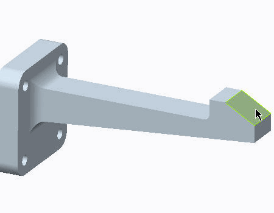
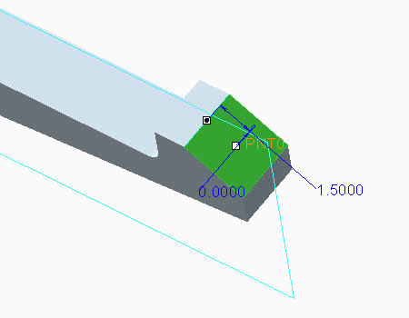

过程: 使用测量
假定背景
“关闭窗口”(Close Window) “拭除未显示的”(Erase Not Displayed)
“拭除未显示的”(Erase Not Displayed) 
Simulate_Modeling\Measures
 MEASURE_CLIP_SIMULATE.PRT
MEASURE_CLIP_SIMULATE.PRT
|
|
||
 |
Creo Parametric 用户打开 MEASURE_CLIP.PRT | |
|
|
||
-
任务 1. 准备用于测量规范的模型。
1. 在功能区中，选择“精细模型”(Refine Model) 选项卡。
2. 在“基准”(Datum) 组中单击“点”(Point)
 。“基准点”(Datum Point) 对话框随即出现。
。“基准点”(Datum Point) 对话框随即出现。
3. 在模型中选择显示的曲面。
您在模型中创建的点不必为硬点 (有限元节点)，但此点必须驻留在几何上。您也可以在几何的内部放置测量，但那些测量必须在诸如“体积块区域”的边之类的参考上创建。

4. 启用“平面显示”(Plane Display)
 。
。
5. 在“基准点”(Datum Point) 对话框中，单击“偏移参考”(Offset References) 字段。
6. 按住 CTRL 键并选择基准平面 Front_XY 和如图所示的边。
7. 在“基准点”(Datum Point) 对话框的“偏移参考”(Offset references) 部分中，为“前”偏移参考键入 0.0，为“边”偏移参考键入 1.50。
8. 单击“确定”(OK)。
-
任务 2. 创建位移测量。
1. 在功能区中，选择“主页”(Home) 选项卡。
2. 在“运行”(Run) 组中单击“测量”(Measures)
 。将出现“测量”(Measures) 对话框。
。将出现“测量”(Measures) 对话框。
3. 单击“新建”(New)。将出现“测量定义”(Measure Definition) 对话框。
4. 如图所示完成字段。
5. 单击“确定”(OK)。
-
任务 3. 创建计算的测量。
1. 在“测量”(Measures) 对话框中，单击“新建”(New)。将出现“测量定义”(Measure Definition) 对话框。
2. 完成对话框，如图所示。
3. 单击“确定”(OK)。
4. 在“测量”(Measures) 对话框中，单击“关闭”(Close)。
-
任务 4. 调查作为静态分析输出的测量。
1. 在功能区中，选择“主页”(Home) 选项卡。
2. 在“运行”(Run) 组中单击“分析和研究”(Analyses and Studies)
 。将出现“分析和设计研究”(Analyses and Design Studies) 对话框。
。将出现“分析和设计研究”(Analyses and Design Studies) 对话框。
3. 选择已定义的研究并单击“开始运行”(Start Run)
 。
。
4. 单击“是”(Yes) 以运行交互诊断。
5. 单击“显示研究状况”(Display Study Status)
 以监视运行。
以监视运行。
6. 在“运行状况”(Run Status) 对话框中，标识 Creo Simulate 所报告的默认测量的列表 (最小或最大数量) 和已定义测量的列表。因为载荷不会随着时间或频率改变，所以仅报告您所创建的测量的单个值。
测量也可用作解决方案能够收敛的数量。在任意“多通道自适应分析”(Multi-Pass Adaptive Analyses) 对话框中，选择单选按钮“测量”(Measures) 并选择任意默认的或用户定义的测量。
7. 在“运行状况”(Run Status) 对话框中，单击“关闭”(Close)。
8. 在“诊断”(Diagnostics) 窗口中单击“关闭”(Close)。
9. 在“分析和设计研究”(Analyses and Design Studies) 对话框中，单击“关闭”(Close)。
过程就此结束。